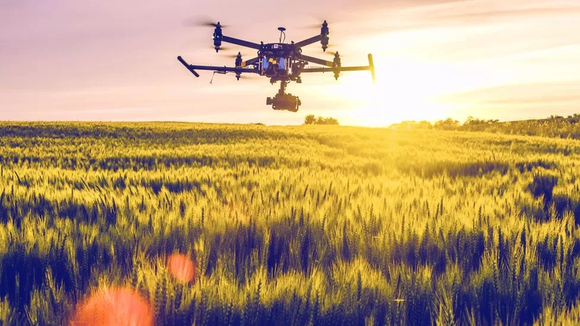
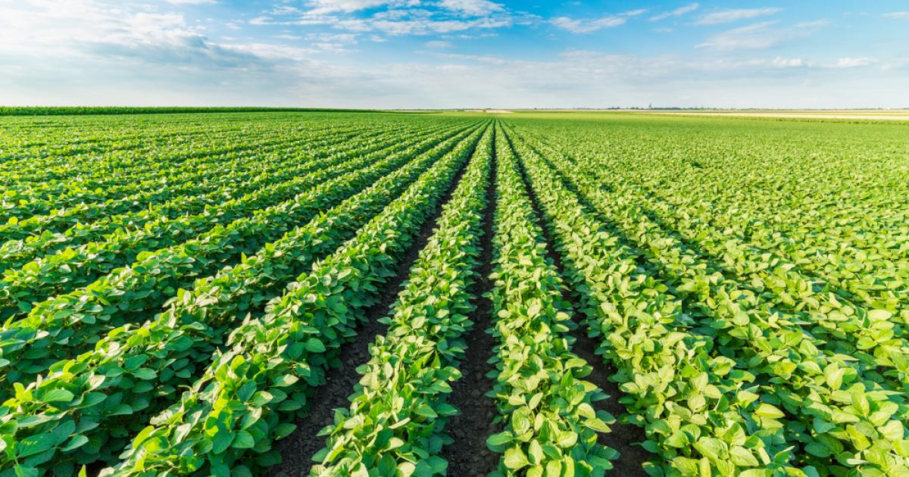

Revolutionizing Precision Agriculture
Welcome to AgInsights, where we are pioneering the future of agriculture through advanced drone sensing technology. Our innovative platform harnesses the power of cutting-edge sensors and artificial intelligence to empower farmers with actionable data-driven insights. By optimizing the use of resources and streamlining decision-making, we help farmers adopt sustainable and profitable agricultural practices that cater to the ever-evolving global demands.
At AgInsights, we recognize the growing challenges faced by the agricultural sector and are committed to providing solutions that address pressing concerns related to efficiency, environmental impact, and long-term sustainability. Our groundbreaking drone-based approach is poised to revolutionize the industry, offering farmers a cost-effective and environmentally responsible way to maximize productivity and minimize waste. Join us on our mission to transform agriculture for a greener and more abundant world.
The Problem
The global agricultural industry is facing unprecedented challenges due to climate change, population growth, and resource scarcity. Traditional farming practices struggle to keep pace with increasing demands for food production, often leading to unsustainable and inefficient methods. As a result, farmers are grappling with mounting economic and environmental pressures that threaten the long-term viability of their operations.
One of the most significant issues in contemporary agriculture is the overuse and misuse of agricultural input chemicals such as fertilizers, herbicides, and pesticides. Excessive application not only inflates farming costs but also contributes to soil degradation, water pollution, and the loss of biodiversity. Farmers desperately need new tools and technologies to optimize input usage, minimize environmental impact, and enhance overall efficiency.
As consumer attitudes shift towards sustainable and eco-friendly products, the agricultural sector must adapt to stay competitive in the market. Farmers and agribusinesses need to embrace innovative solutions that prioritize both profitability and environmental responsibility. The future of farming depends on the development and adoption of transformative technologies that address the complex challenges faced by the industry today.

Our Mission
At AgInsights, our mission is to revolutionize agriculture by harnessing advanced drone sensing technology. We strive to empower farmers with data-driven insights, enabling them to make informed decisions for sustainable and profitable agricultural practices. Through innovation and a commitment to environmental responsibility, we aim to transform the future of farming and contribute to a greener, more abundant world.
The Opportunity
The precision agriculture market is experiencing rapid growth, estimated to reach over $12 billion by 2025. This growth is driven by a global need for sustainable farming practices and an increasing demand for higher crop yields to feed a growing population. As a result, the demand for data-driven insights in agriculture is at an all-time high. AGInsights is perfectly positioned to capitalize on this market opportunity.
Get In Touch
To learn more about AGInsights and how it can benefit your farming operations, contact us at: info@aginsights.com.